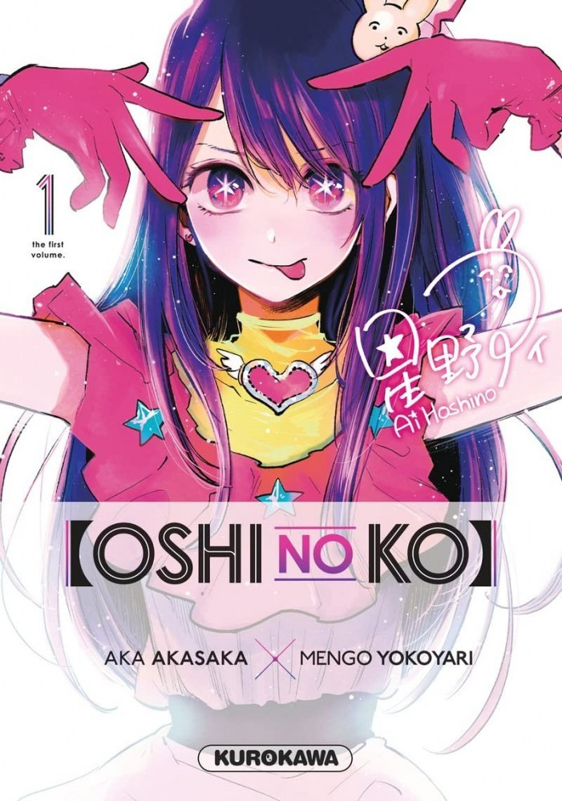
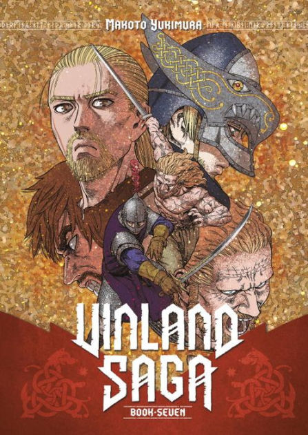
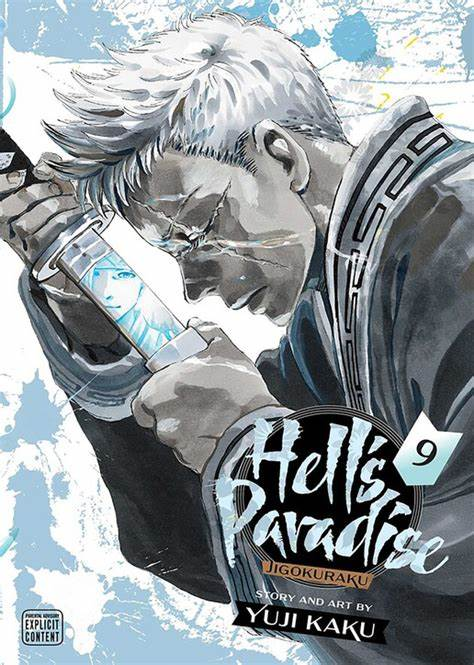

#1 Oshi No Ko

Résumé du manga :
Le docteur Gorô Amamiya est obstétricien dans un hôpital de campagne. Il est loin du monde de paillettes dans lequel évolue Ai Hoshino, une chanteuse au succès grandissant dont il est “un fan absolu”. Ces deux-là vont se rencontrer dans des circonstances peu favorables, mais cet événement changera leur vie à jamais !
Résumé de l'animé :
Oshi no Ko raconte l’histoire d’Ai Hoshino, une célèbre et talentueuse idole japonaise du groupe B-Komachi. Âgée de seulement 16 ans, Ai tombe enceinte de jumeaux, dont un garçon et une fille. Afin de garder son image de parfaite idole, elle souhaite par-dessus tout cacher ce secret au grand public.
Ressenti des fans :
Les fans ont été agréablement surpris par cet anime. Ils ont apprécié la manière dont il aborde des sujets rares et sa petite dose d'humour. Les fans ont trouvé les personnages complexes et terriblement attachants. Ils ont également apprécié le fait que l'animé traite des enjeux originaux, comme comprendre ce qu'il se passe derrière les coulisses du show-business ainsi que la santé mentale des stars. Certains fans ont même décrit Oshi No Ko comme leur plus belle découverte de l'année 2023.
Liens utiles pour Oshi No Ko
Attention ! Contenu explicite !
#2 Demon Slayer: Kimetsu no Yaiba - Le Village des forgerons

Résumé du manga :
Dans l’arc du Village des Forgerons, Tanjiro se rend au village pour remplacer son épée. Il rencontre Mitsuri Kanroji, le Pilier de l’Amour et Genya Shinazugawa, un des pourfendeurs de démons. Après s’être entraîné avec une poupée d’entraînement, Tanjiro découvre une épée vieille de 300 ans. C’est à ce moment que Hantengu, le démon du Rang Quatre Supérieur se présente et la bataille commence.
Résumé de l’animé :
L’adaptation animée suit fidèlement le manga. Les scènes d’action sont bien animées et les mouvements de foudre sont particulièrement impressionnants. L’arc se termine par une bataille intense entre Tanjiro Kamado, Nezuko Kamado, Genya Shinazugawa et Mitsuri Kanroji contre Hantengu.
Ressenti des fans :
Les fans ont exprimé leur admiration pour la résilience de Tanjiro et ont été impressionnés par les mouvements de foudre. Cependant, certains fans ont exprimé leur déception en disant qu’ils étaient restés sur leur faim malgré un excellent premier épisode et un fantastique dernier épisode.
#3 Vinland Saga

Vinland Saga est un manga de Makoto Yukimura qui suit la vie de Thorfinn Thorsson, un jeune islandais qui cherche à venger la mort de son père assassiné par des pirates menés par Askeladd. Le manga s’inspire de plusieurs sagas islandaises et mêle personnages et événements historiques avec de nombreux éléments fictifs. Il a été prépublié dans le Weekly Shōnen Magazine à partir d’avril 2005 avant d’être déplacé dans le Monthly Afternoon en décembre 2005 et publié en tankōbon par Kōdansha. La version française est publiée par Kurokawa depuis janvier 2009.
L’adaptation en une série télévisée d’animation par Wit Studio a été diffusée pour la première fois entre juillet et décembre 2019. Une deuxième saison produite par le studio d’animation MAPPA, est diffusée de janvier à juin 2023. Les fans ont salué l’adaptation animée, considérée comme l’une des meilleures séries des années 2010
#4 L’Attaque des Titans 4 : Saison finale - Partie 3

Résumé de l’animé:
Dans la saison finale de l’anime, nous assistons à une bataille à grande échelle dans le quartier de Shiganshina. Eren Jaeger invoque son pouvoir pour terrasser le monde et détruire toute vie à l’extérieur de l’île de Paradis avec son armée de Titans. Cependant, ce plan n’est pas du goût de Marley et de ses amis. Ces derniers forment alors une alliance de circonstance pour stopper ce génocide déguisé en vengeance organisé par Eren Jaeger.
Résumé du manga:
Dans le manga, nous suivons la vie de Thorfinn Thorsson, un jeune islandais qui cherche à venger la mort de son père assassiné par des pirates menés par Askeladd. Le manga s’inspire de plusieurs sagas islandaises et mêle personnages et événements historiques avec de nombreux éléments fictifs. Il a été prépublié dans le Weekly Shōnen Magazine à partir d’avril 2005 avant d’être déplacé dans le Monthly Afternoon en décembre 2005 et publié en tankōbon par Kōdansha. La version française est publiée par Kurokawa depuis janvier 2009.
Ressenti global des fans:
Les fans ont salué l’adaptation animée de L’Attaque des Titans 4 : Saison finale - Partie 3, considérée comme l’une des meilleures séries des années 2020. Cependant, certains fans ont exprimé leur déception quant à la qualité d’animation en deçà de ce à quoi ils étaient habitués pour les trois premières saisons de la série 1. Je n’ai pas trouvé de sources fiables pour les ressentis des fans concernant le manga.
#5 Hell's paradise

Résumé de l’animé:
Dans l’anime, nous suivons Gabimaru, le plus célèbre et puissant des assassins, qui a été capturé et croupit en prison. Malgré sa condamnation à mort, aucun bourreau ne parvient à lui ôter la vie. En effet, son initiation au ninjutsu lui permet de résister aux plus atroces des tortures. C’est alors qu’il reçoit la visite d’un exécuteur pas comme les autres : une puissante manieuse de sabre et trancheuse de tête. Après un âpre combat dont il réchappe de peu, celle-ci le pousse dans ses retranchements. En échange de la vie sauve, elle lui propose un marché : il devra se rendre sur une île mystérieuse afin de récupérer un élixir d’immortalité. Seul problème : le seul témoin revenu “vivant” de cette île est en mort cérébrale car infecté et consumé par une plante comme issue d’un autre monde.
Résumé du manga:
Dans le manga, nous suivons Gabimaru, le plus célèbre et puissant des ninjas-assassins qui a été capturé et croupit en prison. Affirmant n’avoir plus aucune raison de vivre, il attend désespérément qu’un bourreau parvienne à lui ôter la vie car son entraînement surhumain lui permet de résister aux pires des châtiments. C’est alors qu’il reçoit la visite d’un exécuteur pas comme les autres : une puissante manieuse de sabre et trancheuse de tête. Après un âpre combat dont il réchappe de peu, celle-ci le pousse dans ses retranchements. En échange de la vie sauve, elle lui propose un marché : il devra se rendre sur une île mystérieuse afin de récupérer un élixir d’immortalité. Seul problème : le seul témoin revenu “vivant” de cette île est en mort cérébrale car infecté et consumé par une plante comme issue d’un autre monde